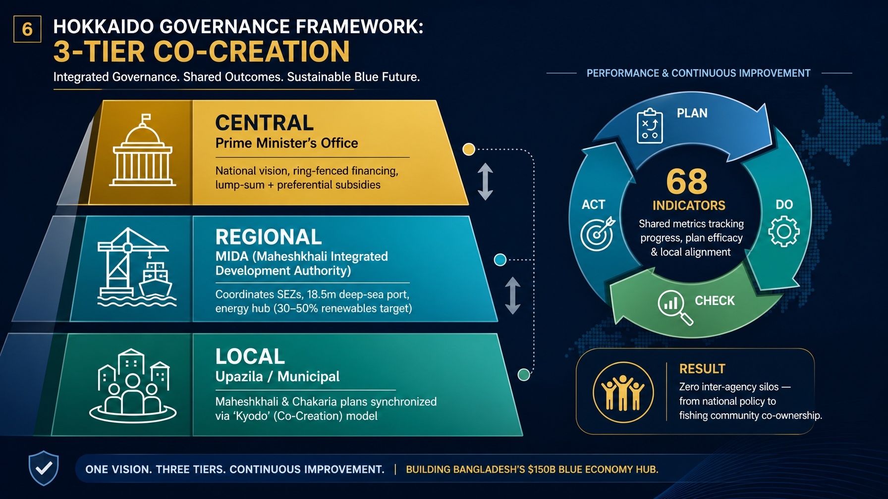

Established under statutory Act No. 84 of 2026 under the direct supervisory jurisdiction of the Prime Minister's / Chief Adviser's Office, MIDA exercises unified single-window authority across 34,000 acres in Maheshkhali and Matarbari—orchestrating Bangladesh's $150 Billion deep-sea maritime gateway, national energy transition, high-value manufacturing, and ecological stewardship through 2056.
Three fundamental pillars define MIDA's statutory autonomy, physical supremacy, and executive governance.
Empirical data showing Matarbari Deep-Sea Port's catalytic leap over legacy riverine ports and its national GDP multiplier effect.
Projected national economic contributions codified in the 30-year Master Plan (2025–2056).
Originating from the 2014 Japan–Bangladesh Bay of Bengal Industrial Growth Belt (BIG-B) vision, MIDA now operates with full legal authority under Act No. 84 of 2026, transitioning from a coordinating cell into an empowered statutory body.
Under Section 7 of the MIDA Act 2026, the supreme policy and sanctioning body is the Governing Board, chaired by the Prime Minister / Chief Adviser, with the Minister of Finance as Vice-Chairperson, alongside 6 Sector Ministers, 8 Ministerial Secretaries, NBR Chairman, BIDA & BEZA Executive Chairmen, and the Principal Secretary to the Prime Minister serving as Executive Chairman and Member Secretary.
“A coordination cell operates on meeting minutes; a statutory Authority operates with the enforceable power of national law. MIDA issues binding master plans, unilateral Section 10 NOCs, and ring-fences multi-year infrastructure financing.”

Adopted on January 5, 2026, the 27 km Matarbari Port Access Road establishes an inviolable spatial demarcation between heavy industry and sustainable human settlements.
Concentrated coastal infrastructure designed for high energy consumption, heavy freight transport, and direct marine berthing.
High-quality liveable urban environment designed to attract and retain global executive, scientific, and engineering talent.
Full visibility across the 27 transformational projects shaping Maheshkhali: 12 completed, 4 actively under construction, 5 confirmed FDI pipelines, and 11 strategic pipeline projects.
CPGCBL | EPC: Sumitomo, Toshiba & IHI (STIC JV)
Ultra-supercritical power plant, 275m chimney, 400kV GIS substation. Commercial operation achieved in January 2025.
BPC / Eastern Refinery Ltd (ERL)
Direct offshore unloading into 6 storage tanks; discharges tankers in 3 days vs 9 days, saving Tk 800 Crore annually.
Chittagong Port Authority | Penta-Ocean & TOA JV
Construction of 460m container terminal and 300m multipurpose terminal with 18.5m draft. Target launch 2029.
RHD | Halla & Mir Akhter JV (27 km Total)
2-lane (expandable to 4-lane) dedicated expressway linking deep-sea port to National Highway 1 (N1) across 10.5 km of bridges.
RPGCL / Petrobangla | Delivery: PPP BOOT
156 Acres footprint, 5 containment tanks of 250,000 m³ each. In tender evaluation under PPP Authority.
CPA & AIS (Singapore / Australia) | Delivery: PPP
200 Acres ship repair facility generating foreign currency with zero sovereign financial liabilities.
BEZA | 1,240 Acres (570 Acres Distributed)
Anchor plots allotted to TK Group / Samuda Chemical (510 Ac), Pacific Gas (60 Ac), and Genesis S. Alam (200 Ac).
Petrobangla | Delivery: G2G Bilateral
600 MMCFD daily regasification capacity; contract signing targeted for August 2026; commercial operation in March 2028.
Bangladesh Bridge Authority (BBA)
Fixed link bridging Maheshkhali to Eidgaon / Cox's Bazar mainland. Pre-feasibility complete on 'Alignment B'.
True progress protects human dignity. MIDA enforces a statutory 'zero unmitigated displacement' policy, guaranteeing livelihood transition for fishermen and salt producers while conserving pristine marine ecosystems.
650 Acres dedicated to the permanent resettlement of 1,400 inhabitants (207 families affected by Phase-II port dredging).
Statutory duty under MIDA framework to protect traditional economic livelihoods:
Strict ecological ring-fencing to ensure coastal biodiversity thrives:
Displaced families receive multi-year vocational training in modern deep-sea trawler navigation, cold-chain operations, precision machining, and maritime logistics—turning local residents into formal stakeholders in the $150B Blue Economy.
Benefit from streamlined clearances, bonded warehouse privileges, and full fiscal protections codified under the MIDA statutory mandate.
Immediate lease allocation across 770 acres in Dhalghata SEZ-5 with pre-graded 8m MSL soil levels.
Fast-tracked statutory No-Objection Certificate integrating BEZA, Navy, Coast Guard & CPA concurrences.
Guaranteed connection to 400kV power grid, natural gas pipeline, and 161 MLD surface industrial water.
Direct statutory issuance, renewal, and management of foreign technical expert work visas and permits.
Submit land allotment requests, track Section 10 NOCs, and request utility clearances online.
Direct verified contact points for official correspondence, investment inquiries, and project coordination at MIDA.
Member (Admin, Coordination & Finance)
Additional Secretary, GoBMember (Port, Fisheries & Marine Affairs)
(ND), NGP, ndu, psc, Bangladesh NavyDirector (Fisheries, Research & Marine)
(TAS), PCGM, afwc, psc, Bangladesh NavyDirector (Port, Logistics & Enforcement)
(E), Bangladesh NavyDeputy Director (Operations)
Senior Assistant Secretary, GoBAdministrative & Computer Operations
Secretariat Staff SupportThe institutional progression of Bangladesh's premier deep-sea development corridor from bilateral conception to parliamentary enactment.
| Milestone Date | Institutional Strategic Development | Statutory Status |
|---|---|---|
| September 2014 | BIG-B Initiative Conceived: Japan and Bangladesh announce the Bay of Bengal Industrial Growth Belt (BIG-B) initiative. Matarbari is designated as the core maritime anchor of the Dhaka–Chattogram corridor. | G2G Bilateral |
| August 22, 2017 | EPC Groundbreaking: Construction commences on the Matarbari 2×600 MW USC Coal Plant and the 14.3 km commercial artificial navigation channel. | Fast-Track Mega Project |
| February 18, 2018 | MIDI CC Constituted: Moheshkhali-Matarbari Integrated Infrastructure Development Initiative Coordination Committee (MIDI CC) formed at the Prime Minister's Office. | Cabinet Cell |
| December 19, 2020 | First Commercial Berthing: First ocean cargo vessel successfully berths at Matarbari channel with 16m MSL draft depth. | Operational Milestone |
| January 5, 2026 | Spatial Red Line Adopted: The 27 km Port Access Road is officially designated as the non-negotiable statutory boundary separating heavy industry from urban civic townships. | Section 20 Mandate |
| April 11, 2026 | MIDA Act 2026 Enacted: Parliament passes Act No. 84 of 2026 ("Maheshkhali Integrated Development Authority Act, 2026"), establishing complete statutory autonomy under PMO/CAO. | Act 84 / 2026 Enacted |
MIDA exercises statutory powers to issue mandatory Section 10 Project NOCs, administer Section 11 One-Stop Service clearances, enforce Section 20 spatial zoning boundaries, and authorize Section 37 & 38 duty-free capital machinery and bonded warehouse privileges.